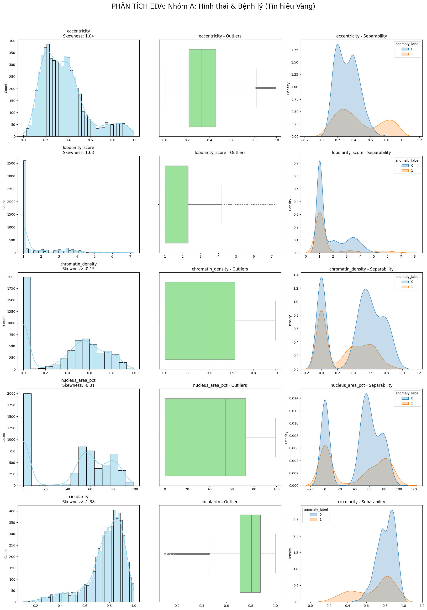

Blood Cell Classification — Preprocessing Pipeline
A complete guide to every method: what it is, why it was chosen, and the math behind it. Sourced from config.yml and EDA findings.
Dataset & Problem Statement
Binary classification: anomaly_label ∈ {0, 1}
0 = Normal · 1 = Abnormal / pathological blood cell
F1-Score (primary) · ROC-AUC (secondary)
Class skewness = 0.77 → accuracy alone is misleading for imbalanced data
Pipeline at a Glance
An ImbPipeline (imbalanced-learn) with 15 ordered steps. Steps 9 & 10 are utility drops so there is no separate section for them.
Confidence Filter — Group D Row Drop
Group Dlabeller_confidence_score ≥ 0.5Records how confident the human annotator was when assigning a label. Left-skewed: annotators are more confident about normal cells than abnormal ones.
cytodiffusion_anomaly_score and cytodiffusion_classification_confidence — produced by the same cytodiffusion system as anomaly_label. Their KDE shows 100% class separation: a textbook leakage signature.
IQR Trimming — Group C Outliers
Group CGroup C distributions are symmetric and near-Gaussian (see EDA chart). Extreme values are measurement errors or device noise — genuine corrupted observations, not biological outliers. Deleting them is correct; capping would keep corrupted values in the dataset.
Contrast Group A: Outliers there are real pathology signals → capped, not removed.

Drop Leakage & Irrelevant Columns
| Column | Reason for Dropping | Evidence |
|---|---|---|
cell_id | Row identifier — no predictive value | — |
disease_category | Leakage Contains target-derived labels ("Leukemia", "Normal_WBC") | p = 0.0 |
cytodiffusion_anomaly_score | Leakage Output of same cytodiffusion system as target | 100% KDE separation |
cytodiffusion_classification_confidence | Leakage Companion confidence from same system | 100% KDE separation |
cell_type | Leakage p=0.0 but directly encodes disease state | p = 0.0 |
dataset_source | No statistical association with target | p = 0.520 |
microscope_model | No statistical association; dropping improves generalisability | p = 0.408 |
Physical Unit Normalization
Group Bmagnification_x is dropped in Step 9 once it is no longer needed.
Staining Protocol Shifting
Group C Must run before Step 6Fitted on
X_train only — group means are stored, then applied to X_test without re-fitting, preventing leakage.
Feature Engineering — Domain Knowledge
Medical experts interpret ratios between raw measurements, not the numbers themselves. These five engineered features encode hematological domain knowledge. Color ratios are computed from protocol-shifted colors (Step 5).
Source feature dropped after:
nucleus_area_pct is a monotonic bijection of NC_Ratio → VIF = ∞ if both are retained.
Computed from physical-unit columns (
true_cell_area, true_perimeter) created in Step 4 — not from raw pixel columns — so the ratio is magnification-invariant.Note
true_perimeter is dropped in Step 7: keeping true_cell_area, true_perimeter, and form_factor together gives VIF = ∞ for true_perimeter.
b_ratio is not kept: $R+G+B=1$ always, so $B = 1 - R - G$ — perfect linear dependency, VIF = ∞.
Computed after protocol shifting (Step 5) so that hue reflects cell biology, not staining methodology.
mcv_fl (mean corpuscular volume) captures the patient's own baseline. A high ratio flags cells that are anomalously large relative to that patient — a signal for blasts or macrophages.Multicollinearity fix Both
cell_diameter_um and mcv_fl are dropped in Step 7 after this feature is computed. Keeping a divisor alongside its ratio (size_anomaly = cell_diameter_um / mcv_fl) inflates VIF for all three — the ratio captures the cross-group interaction; the raw values add no independent signal.
true_cell_area produced in Step 4 is carried through as an engineered feature. It replaces cell_area_px (dropped in Step 7).
true_perimeter is also produced in Step 4 and is used by Step 6 to compute form_factor, then dropped in Step 7: since $\text{form\_factor} = \frac{4\pi \cdot \text{true\_cell\_area}}{\text{true\_perimeter}^2}$, keeping all three creates a perfect linear dependency (VIF = ∞ for true_perimeter).
Drop Source Features — Multicollinearity Prevention
New Step• Inflated coefficient variance in Logistic Regression and other linear models
• Numerical instability (singular matrices)
• Wasted capacity in the ColumnTransformer and VIF filter (which would drop them anyway, but explicitly removing them here is cleaner and faster)
| Column Dropped | Replaced By | Multicollinearity Reason |
|---|---|---|
nucleus_area_pct | nc_ratio | Monotonic bijection → $r = 1.0$, VIF = ∞ |
cell_area_px | true_cell_area, form_factor | Linear rescale of area; form factor uses the same raw pixel value |
perimeter_px | true_perimeter → then dropped | Linear rescale; form factor encodes the same shape ratio |
true_perimeter | form_factor + true_cell_area | $\text{form\_factor} = 4\pi \cdot \text{true\_cell\_area} / \text{true\_perimeter}^2$ → recoverable exactly → VIF = ∞ |
mean_r, mean_g, mean_b | r_ratio, g_ratio, stain_intensity | Hue encoded by ratios; brightness by stain_intensity; keeping absolutes duplicates both |
b_ratio | (implicit: $1 - r\_\text{ratio} - g\_\text{ratio}$) | $r+g+b \equiv 1$ → perfect linear dependency, VIF = ∞ |
cell_diameter_um | size_anomaly | Direct divisor of the ratio — keeping source + ratio inflates VIF for all three |
mcv_fl | size_anomaly | Direct divisor of the ratio — keeping source + ratio inflates VIF for all three |
Categorical Encoding
| Feature | Method | Rationale | p-value |
|---|---|---|---|
staining_protocol | One-Hot Encoding | 3 nominal values (Giemsa, Wright, …) — no ordinal relationship | 0.026 ✓ |
patient_sex | One-Hot Encoding | 2 nominal values (M/F) — kept as control variable | 0.376 |
patient_age_group | Ordinal Encoding | Pediatric < Adult < Elderly — natural order exists; ordinal preserves it without dummy explosion | 0.589 |
Per-Group Numeric Scaling (ColumnTransformer)
A ColumnTransformer applies a different sub-pipeline to each feature group based on its statistical profile. Each group's scaler is justified by EDA distribution analysis.

1 · Winsorization
Why cap not trim: Extreme values here ARE real pathology signals. Capping bounds them so they don't dominate linear models, while preserving the information that they are extreme.
2 · Yeo-Johnson Transform
Why not Box-Cox: Box-Cox requires $x > 0$ strictly. Yeo-Johnson handles non-positive values — needed since features may cross zero after centering. $\lambda$ is optimised via MLE per feature.
3 · RobustScaler
Why not StandardScaler: StandardScaler uses mean and σ — both non-robust to outliers. Median and IQR are breakdown-point ≥ 25%, making RobustScaler resistant to residual extremes after capping.

QuantileTransformer (uniform output)
Maps each value to its empirical quantile rank, then maps that rank to $\mathcal{U}(0,1)$. The result: each feature is flattened to a uniform distribution regardless of original shape — multi-modal peaks and skewness are both resolved in one step.
Yeo-Johnson reduces skewness but cannot handle multimodality — it would leave the multiple peaks intact. QuantileTransformer's rank-based mapping treats every quantile equally, producing a flat distribution that allows models to find a consistent decision boundary across all sub-populations.
MinMaxScaler
Simplest appropriate scaler: maps all values to [0,1] preserving the original distribution shape.
Group C is already near-Gaussian after IQR trimming — no skewness to fix. Outliers have been removed. A power transform would be overkill and could distort the (already clean) Gaussian shape. These features have near-zero discriminative power and will largely be removed by feature selection (Step 14).
true_perimeter is dropped in Step 7 (VIF = ∞ with form_factor + true_cell_area)
Engineered features are derived quantities with no strong prior outlier concern after Steps 1–7. Z-score normalisation centres them without any distribution assumptions.

cytodiffusion_anomaly_score shows 100% class separation (data leakage). labeller_confidence_score is left-skewed — annotators more confident on normal cells.GMM Clustering — Multi-modality Handling
| K-Means | GMM | |
|---|---|---|
| Assignment | Hard (1 cluster) | Soft (probability) |
| Cluster shape | Spherical only | Ellipsoidal |
| Overlap allowed | No | Yes |
| Multi-modal data | Limited | Ideal |
anomaly_label is never passed to GMM — clustering is unsupervised on morphological features only, preventing leakage.
Gaussian Noise Augmentation
Group BTargets updated after Step 7 drops —
cell_area_px, perimeter_px, mean_r/g/b, cell_diameter_um, mcv_fl, true_perimeter no longer exist:
Covariate Shift Simulation
Group CFeature Selection — 4-Stage Sequential Filter
- Fit RandomForest on remaining features
- Rank by $w_j$ (feature importance)
- Remove feature with lowest $w_j$
- Repeat; pick best count via 5-fold F1 CV
SMOTE-Tomek — Class Imbalance
SMOTE
Interpolates between minority sample $\mathbf{x}_i$ and a random KNN neighbour $\mathbf{x}_j$. Creates new synthetic samples rather than duplicating existing ones.
Tomek Links
Remove the majority-class member of each link.
Cleans boundary ambiguity — removes the majority samples closest to the minority boundary, creating a clean margin.
X_train inside the pipeline). The test set is never modified — evaluating on real unaugmented samples ensures honest performance metrics.
Model Hyperparameter Choices
All hyperparameters are fixed (no grid search) and are read from config.yml → model_training.models[*].params. Below is the justification for each non-default value.
| Parameter | Value | Why |
|---|---|---|
| max_depth | 10 | Prevents over-deep trees from memorising noise; 10 levels captures complex interactions without overfitting the small dataset. |
| min_samples_split | 5 | A node needs ≥5 samples to be split — prevents splits on individual outlier points. |
| min_samples_leaf | 2 | Each leaf must contain ≥2 samples, eliminating singleton leaves that memorise noise. |
| class_weight | balanced | Weights each class inversely proportional to its frequency → compensates for class skewness 0.77. |
| max_features | sqrt | Uses $\sqrt{n_\text{features}}$ features per split — standard variance reduction technique. |
| ccp_alpha | 0.0 | No post-pruning; VIF + RFECV already removed redundant features, so additional pruning is not needed. |
| Parameter | Value | Why |
|---|---|---|
| var_smoothing | 1e-9 | Adds a small value to estimated per-feature variance to avoid division by zero when a feature has very low variance post-scaling. Default sklearn value, appropriate here since Yeo-Johnson has already stabilised variances. |
| Parameter | Value | Why |
|---|---|---|
| n_neighbors | 5 | Classic starting point. $k=1$ is too noisy; very large $k$ over-smooths the boundary. 5 balances variance and bias for ~4700 training samples. |
| weights | distance | Closer neighbours contribute more. Important for imbalanced data — a minority sample near the boundary gets fairer treatment than uniform weighting. |
| metric / p | minkowski / 2 | Euclidean distance — appropriate for scaled numerical features where all axes have comparable units post-scaling. |
| Parameter | Value | Why |
|---|---|---|
| C | 1.0 | Inverse regularisation strength. C=1 is the neutral (default) regularisation — neither too sparse nor too flexible. Strong regularisation would be premature without tuning. |
| solver | saga | Config says lbfgs but the code overrides to saga — the only solver supporting both L1 and L2 penalties simultaneously, enabling full GridSearch over penalty type. |
| max_iter | 5000 | Increased from default 100 — needed after extensive preprocessing (more orthogonal features take longer to converge). |
| class_weight | balanced | Adjusts loss weights for class imbalance, same rationale as Decision Tree. |
| Parameter | Value | Why |
|---|---|---|
| n_estimators | 100 | 100 trees gives excellent bias-variance tradeoff at moderate compute cost. Forest variance is $\propto 1/n_\text{trees}$ so gains diminish rapidly beyond 100. |
| max_depth | 10 | Same as DT — prevents any individual tree from overfitting (though the ensemble averages this out, limiting depth speeds up training). |
| max_features | sqrt | Decorrelates trees: each split considers only $\sqrt{n}$ random features, so trees make different mistakes and averaging reduces variance. |
| class_weight | balanced | Each tree is weighted per class frequency — handles imbalance at the tree level, not just the dataset level. |
| bootstrap | true | Bagging: each tree is trained on a bootstrap sample (≈63% unique samples) — the held-out OOB samples provide a free validation signal. |
| Parameter | Value | Why |
|---|---|---|
| n_estimators | 100 | 100 boosting rounds. Unlike RF, boosting is sequential so more trees = more risk of overfitting; 100 is the standard starting point. |
| max_depth | 6 | Shallower than RF (6 vs. 10) — in boosting each tree corrects residuals of the previous, so shallow "weak learners" are preferable to deep ones. |
| learning_rate | 0.1 | Conservative shrinkage: each tree contributes only 10% of its prediction. Lower rate = more robust to overfitting, at the cost of needing more trees. |
| subsample | 0.8 | Uses 80% of training data per tree (stochastic gradient boosting). Introduces variance reduction similar to bagging. |
| colsample_bytree | 0.8 | Uses 80% of features per tree — mirrors RF's max_features for tree decorrelation. |
| scale_pos_weight | 3 | $\approx n_\text{negative}/n_\text{positive}$. For skewness=0.77, the majority class is ~3× the minority → this parameter tells XGBoost to penalise minority-class errors 3× more. |
Method Summary
| Step | Method | Applied To | Why Chosen |
|---|---|---|---|
| 1 | Row filter ≥ 0.5 | labeller_confidence_score | Remove uncertain labels before training |
| 2 | IQR Trimming ×1.5 | Group C (11 features) | Symmetric noise-driven outliers — safe to delete |
| 3 | Column drop | 7 columns | Data leakage, no predictive value, statistical non-significance |
| 4 | Physical unit conversion | cell_area_px, perimeter_px | Eliminate magnification bias (px → µm) |
| 5 | Group-wise mean shift | mean_r/g/b, stain_intensity | Must precede chromaticity so ratios reflect true hue |
| 6 | Feature engineering (5 features) | NC ratio, Form factor, r/g ratio, Size anomaly, physical units | Encode hematological domain knowledge |
| 7 | Drop source features | nucleus_area_pct, cell_area_px, perimeter_px, mean_r/g/b, b_ratio | Prevent perfect multicollinearity (VIF=∞) |
| 8 | OHE + Ordinal Encoding | 3 categorical features | Statistical significance (p<0.05) and control variables |
| 10a | Winsorization + Yeo-Johnson + RobustScaler | Group A (4 features) | Skewed + critical outliers — preserve pathology signal |
| 10b | Winsorization + QuantileTransformer + StandardScaler | Group B (4 features) | Multi-modal — flatten peaks for consistent boundary |
| 10c | MinMaxScaler | Group C (8 features) | Already Gaussian after IQR trim — minimal transform needed |
| 10d | StandardScaler | Engineered (7 features) | Derived features, no strong outlier concern post-engineering |
| 11 | GMM (BIC, K∈[3,5]) | 6 morphological features | Soft clustering for overlapping cell sub-populations |
| 12 | Gaussian noise (σ=1%) | Group B + physical engineered | Simulate measurement error, prevent overfitting to sensor precision |
| 13 | Multiplicative shift ×U(0.98,1.02) | Group C hematology (7 features) | Simulate inter-hospital analyzer calibration drift |
| 14a | VIF (threshold 10) | All remaining features | Remove multicollinear features |
| 14b | Pearson correlation (threshold 0.9) | Post-VIF features | Remove pairwise linear redundancy |
| 14c | SelectKBest (MI, k=20) | Post-correlation features | Rank by non-linear dependency with target |
| 14d | RFECV (RandomForest, 5-fold F1) | Top-20 MI features | Multivariate interaction-aware optimal subset |
| 15 | SMOTE-Tomek | Training set minority class | Oversample + clean boundary — handle skew=0.77 |